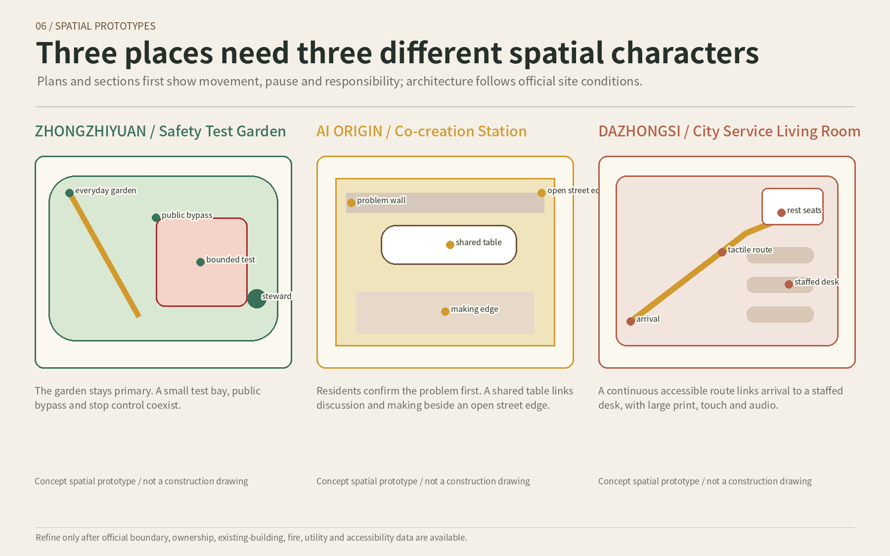
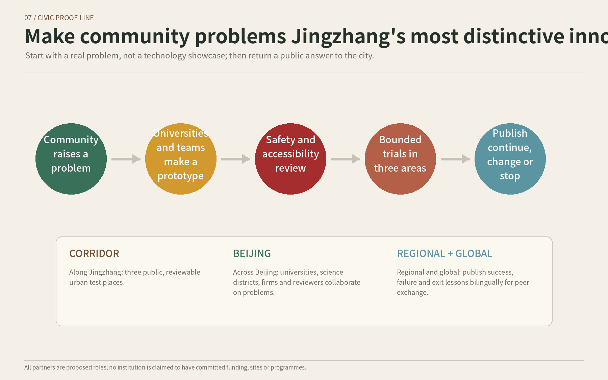
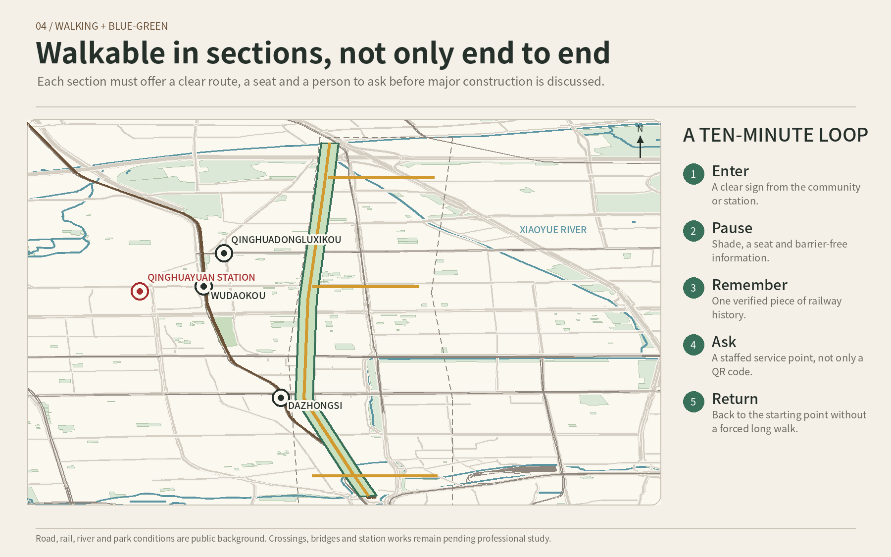
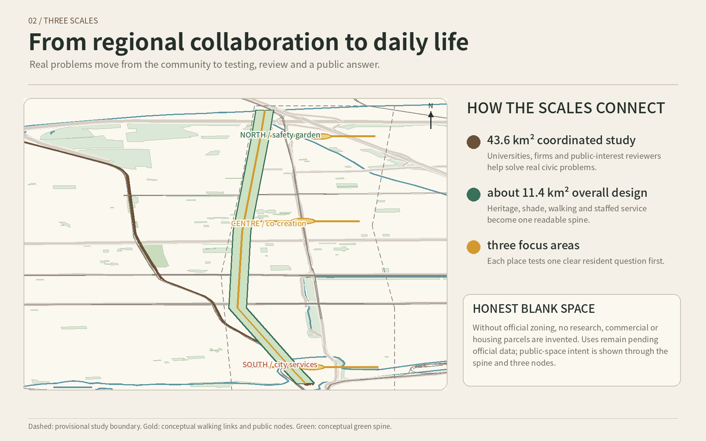
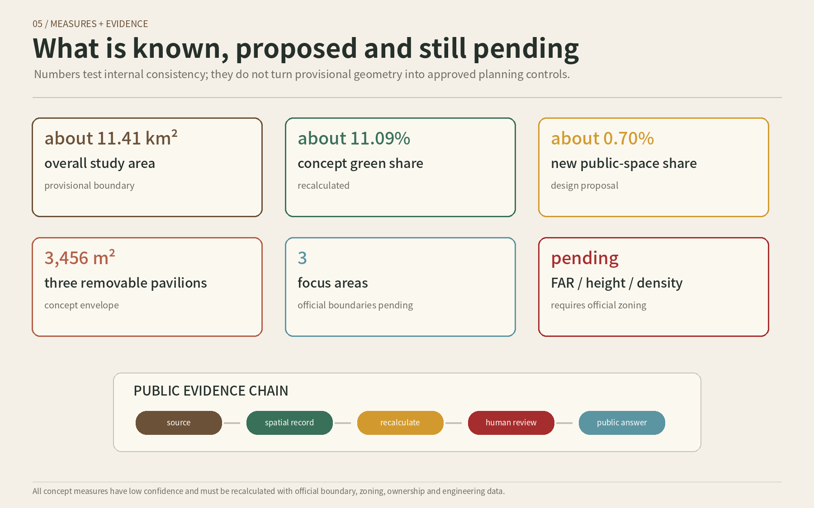

01 / JUDGEMENT
Innovation matters only when the corridor becomes useful
Three scales do different jobs: the larger area connects problem-solving resources, the middle area forms a civic-life spine, and three focus areas start with one clear resident question each.
43.6 km² coordinated study
Who can solve real problems together?
about 11.4 km² overall design
How do walking, parks, memory and service connect?
three focus areas
Where can a small, reversible and accountable trial begin?
Boundary note: official boundaries are unavailable. The maps show provisional study ranges, not approval or ownership lines. Recalculate the full package when official data arrives.
02 / MEMORY
Resolve, journey, solving together
Qinghuayuan Station remains an independent verified red-history anchor. Today’s three nodes do not pretend to be a 1949 route.
1909
Built with resolve
Remember the courage and method of solving real problems.
1949
Journey to the capital
Use sourced history and professional review at Qinghuayuan Station.
TODAY
Solve together
Residents, teams and reviewers answer safety, participation and convenience.
Red-history baseline: use traceable sources, professional review and verified locations; do not invent heritage-control lines or turn history into entertainment.
03 / THREE PLACES
Not three identical tech parks
Each place begins with a resident question, then shapes movement, pause, responsibility and a stop rule.

Zhongzhiyuan | Safety Test Garden
The everyday garden stays primary. Collision, alarm, boundary breach or loss of manual control stops the test.
AI Origin | Co-creation Station
Residents confirm the problem. No site consent or unresolved professional risk means no trial.
Dazhongsi | City Service Living Room
A continuous accessible route links arrival, rest and staffed help. Repeated misinformation pauses the service.


04 / CIVIC PROOF
Make community problems Jingzhang’s distinctive innovation resource
Start with a real problem, make something small, review it independently, try it within a boundary, then publish continue, change or stop.

Along the corridor
Three publicly reviewable urban test places publish failure and stopping as well as success.
Across Beijing
Proposed problem collaboration with universities, science districts, firms and independent reviewers.
Regional and global
A bilingual annual report supports exchange across Beijing-Tianjin-Hebei and internationally.
05 / SPACE
Walk in sections, sit when tired, ask a person
Real rail, roads, water and parks form the base. New elements are reversible small facilities and walking proposals, never invented zoning or unapproved bridges.


06 / DAILY LIFE
AI stays backstage while ten small things improve
AI helps with sorting, translation, duplicate finding and risk prompts. Human beings remain responsible, and every service has a paper or staffed alternative.
An easier route
Large print, audio and paper from verified access and seat information.
Alternative: fixed map and staffMachine courtesy
A small bounded test for slowing, stopping and yielding.
Alternative: ordinary rest gardenSpeak or write a problem
Staff confirm the resident’s original words.
Alternative: staffed registerFraud-prevention learning
Public material becomes plain questions.
Alternative: teacher and bookletInclusive meetings
Captions, translation and paper routes.
Alternative: interpreter and writing boardPrototype a daily problem
Resident confirms, team makes, professional reviews.
Alternative: workshop and cardboardHelp for public-interest ideas
Open conditions support initial matching.
Alternative: directory and open dayLess wandering after arrival
Verified large-print, audio and multilingual routes.
Alternative: signs, paper and staffHelp at an event
Technology assists; organisers remain responsible.
Alternative: host and volunteersAccurate history
Only registered and human-reviewed sources.
Alternative: panel, guide and educator07 / DELIVERY
Every question should receive an answer after the event ends
Residents do not carry technical or safety responsibility. A real public promise needs a confirmed owner, channel and timescale.
Speech, paper or online.
Low cost and reversible.
Safety, access and privacy.
Place, time and owner clear.
Continue, change or stop.
Monthly | open day
Publish problems, status and items still lacking an owner.
Quarterly | continue or stop
Check safety, complaints, privacy, accessibility, use and maintenance.
Annually | bilingual report
State who benefited, what failed and what changes next.
Exit lines: stop after danger, severe leakage or loss of manual control; pause after repeated misinformation or ownerless complaints; expire without real use, maintenance, a lawful site or affordable cost.
08 / EVIDENCE
Make facts, proposals and unknowns visible
Automated checks establish consistency. Selection still depends on spatial judgement, public value, clarity, feasibility and honest treatment of missing data.

Rights and privacy: OpenStreetMap is attributed under ODbL. Four scene images used generative-image assistance with human selection, editing and labelling. Face recognition is not a public-service condition, and non-essential sensitive data is not collected.